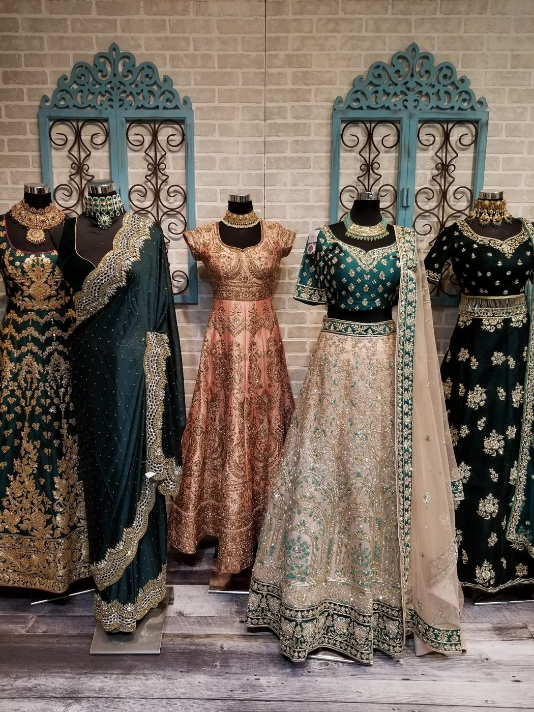
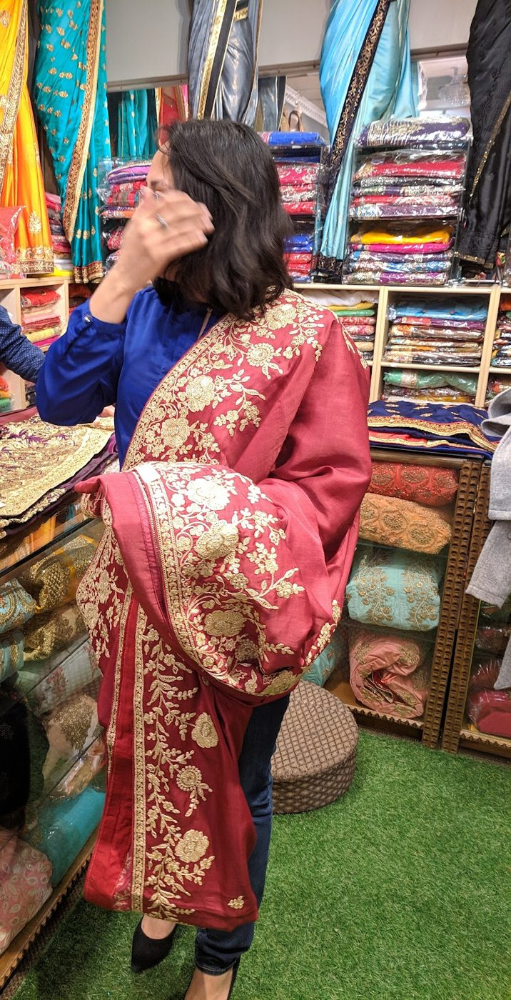

Milliken · Scarborough
South Asian bridal and formal wear on McNicoll
Sartaj Fashions is at 3300 McNicoll Ave, units A2 and A3, in Milliken. The shop’s own Google description calls it a source of “Indian luxury ethnic wear… Bride, Groom & Family.” Reviewers write about bridal lehengas, sarees, and staff who will open folded fabric so you can see the drape.
- Bridal lehengas
- Sarees
- Family outfits
- In-house tailoring
What the shop is known for
Bridal lehengas and wedding outfits
Google lists the shop as a bridal shop, a clothing store and a fabric store. Review topics on the listing include “bridal lengha” and “wedding outfits.” Monisha Babbar mentions “gorgeous bridal lehengas” and reception outfits; Narci Manorajah mentions “a large selection of bridal lenghas.”
Sarees and fabric
Google review topics include “saree selection” and “fabric choice.” Dharsa describes staff opening folded, stitched sarees so she could see the details and drape, then walking her to a sister shop for matching blouse fabric and trims.
Groom and family wear
The official Google description says “Bride, Groom & Family.” Reviewers mention designer suits, and Google’s review topics include “men’s indian outfits.” Listing photos also show a wall of bangles and jewellery in the shop.
In-house tailoring
Google review topics include “in-house tailor” and “custom blouse.” Narci Manorajah wrote that the shop “were able to accommodate to stitch a blouse and skirt within a few days.”
These details come from Sartaj Fashions’ official Google listing description, the listing’s review topics, and customer reviews, all read Nov 23, 2026. The shop does not publish a price list here, and none are shown.

A family shop for wedding outfits
Sartaj Fashions is on McNicoll Avenue in Milliken, in units A2 and A3. The official Google description is short: “Sartaj Fashions brings to you an outstanding range of Indian luxury ethnic wear inspired by our Indian heritage. Bride, Groom & Family.”
Google lists a website, sartajfashions.com, but that address currently opens a Wix error page, so it is not linked here. The surest way to reach the shop is to call or visit during opening hours.
Reviewers name staff, including Raj and Ricky. They do not all describe Ricky the same way, so this page does not add a title of its own. The quotes below keep the wording as written.
What customers say
4.4 ★ from 233 Google reviews (checked Nov 23, 2026). Quotes are word for word. Each one says where it was read: on the Google listing itself, or on a public page that copies reviews.
★★★★★
⭐⭐⭐⭐⭐
I had an amazing experience shopping here! I came in to find outfits for my sister’s wedding, and I was so impressed with the collection. They have gorgeous bridal lehengas, beautiful reception outfits, elegant sarees, designer suits, and so much more—all at very reasonable prices.
The customer service was exceptional, and the staff helped us find exactly what we were looking for. If you’re looking for wedding outfits, this is definitely a place I’d recommend. Everything you need for a wedding can be found here!
★★★★★
Great service especially from Raj. I found a beautiful outfit for my budget. Their bridal boutique is like a fairy tale wonderland! Out of this world choices for brides and guests. Pure luxurious choices.
★★★★★
I had a great shopping experience at Sartaj. Ricky, one of the owners, patiently opened folded sarees that were stitched closed so I could see the details and drape. He suggested a range of unique designs, gave honest feedback on what would suit the occasion, and never felt pushy. After I picked my sarees, he walked me over to their sister shop to choose matching blouse fabric and trims, making sure everything came together. It was thoughtful, unhurried service—something you don’t see often—and I’ll gladly shop there again.
★★★★★
I had a wonderful experience here! They have a large selection of bridal lenghas and were able to accommodate to stitch a blouse and skirt within a few days! The bridal lenghas they house have beautiful designs and rich in colour. I was definitely lucky to have found this place.
Inside the boutique
Real photos from the shop’s public Google listing and from customer reviews. Tap to enlarge.
Visit the shop
3300 McNicoll Ave, Units A2 & A3
Scarborough, ON M1V 5J6
| Monday | 12–7 p.m. |
|---|---|
| Tuesday | 11 a.m.–7 p.m. |
| Wednesday | 11 a.m.–7 p.m. |
| Thursday | 11 a.m.–7 p.m. |
| Friday | 11 a.m.–7 p.m. |
| Saturday | 11 a.m.–7 p.m. |
| Sunday | 12–7 p.m. |
Hours are from the Google listing, checked Nov 23, 2026. A canadacompanies.net listing fetched the same day, and an exa.ai place record, show Monday opening at 1 p.m. instead of 12 p.m.; the other days match. This page uses Google. Please call if you are coming at opening on Monday.